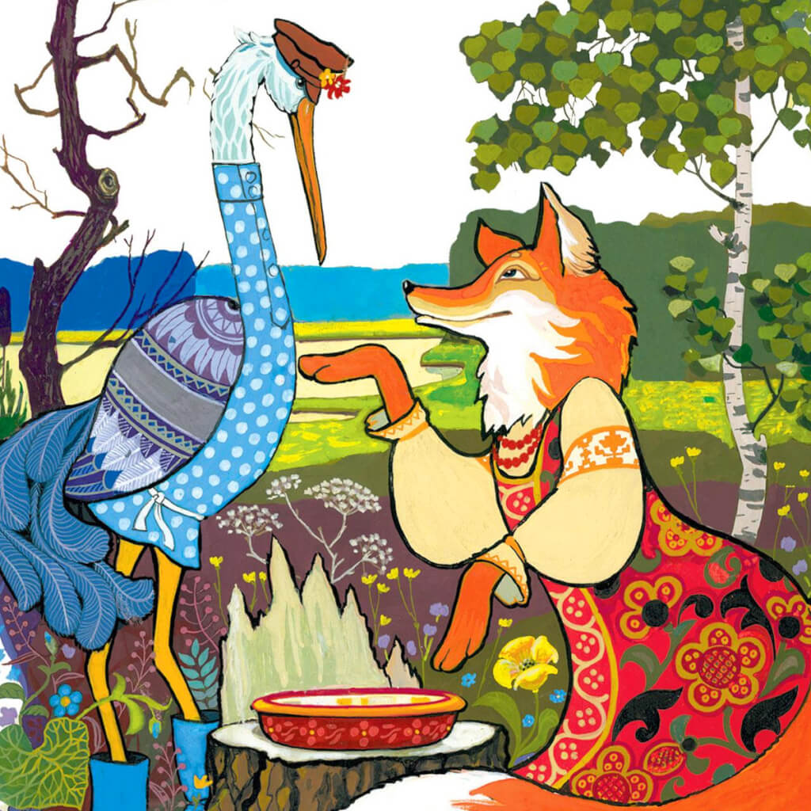

Лиса с журавлем подружились. Вот вздумала лиса угостить журавля, пошла звать его к себе в гости:
— Приходи, куманек, приходи, дорогой! Уж я тебя угощу!
Пошел журавль на званый пир. А лиса наварила манной каши и размазала по тарелке. Подала и потчевает:
— Покушай, голубчик куманек, — сама стряпала.
Журавль стук-стук носом по тарелке, стучал, стучал — ничего не попадает!
А лисица лижет себе да лижет кашу, так все сама и съела. Кашу съела и говорит:
— Не обессудь, куманек! Больше потчевать нечем.
Журавль ей отвечает:
— Спасибо, кума, и на этом! Приходи ко мне в гости.
На другой день приходит лиса к журавлю,
а он приготовил окрошку, наклал в кувшин с узким горлышком, поставил на стол и говорит:
— Кушай, кумушка! Право, больше нечем потчевать.
Лиса начала вертеться вокруг кувшина.
И так зайдет, и этак, и лизнет его, и понюхает-то, — никак достать не может:
не лезет голова в кувшин. А журавль клюет себе да клюет, пока все не съел.
— Ну, не обессудь, кума! Больше угощать нечем.
Взяла лису досада. Думала, что наестся на целую неделю, а домой пошла — несолоно хлебала.
Как аукнулось, так и откликнулось! С тех пор и дружба у лисы с журавлем врозь.